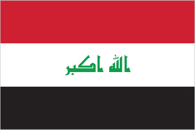
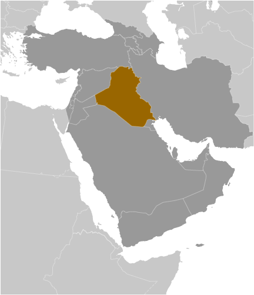
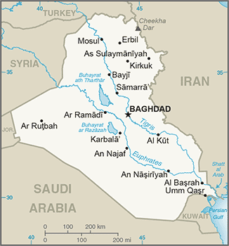

Middle East :: IRAQ
Introduction :: IRAQ
-
Formerly part of the Ottoman Empire, Iraq was occupied by the United Kingdom during the course of World War I; in 1920, it was declared a League of Nations mandate under UK administration. In stages over the next dozen years, Iraq attained its independence as a kingdom in 1932. A "republic" was proclaimed in 1958, but in actuality a series of strongmen ruled the country until 2003. The last was SADDAM Husayn from 1979 to 2003. Territorial disputes with Iran led to an inconclusive and costly eight-year war (1980-88). In August 1990, Iraq seized Kuwait but was expelled by US-led UN coalition forces during the Gulf War of January-February 1991. Following Kuwait's liberation, the UN Security Council (UNSC) required Iraq to scrap all weapons of mass destruction and long-range missiles and to allow UN verification inspections. Continued Iraqi noncompliance with UNSC resolutions over a period of 12 years led to the US-led invasion of Iraq in March 2003 and the ouster of the SADDAM Husayn regime. US forces remained in Iraq under a UNSC mandate through 2009 and under a bilateral security agreement thereafter, helping to provide security and to train and mentor Iraqi security forces.In October 2005, Iraqis approved a constitution in a national referendum and, pursuant to this document, elected a 275-member Council of Representatives (COR) in December 2005. The COR approved most cabinet ministers in May 2006, marking the transition to Iraq's first constitutional government in nearly a half century. Nearly nine years after the start of the Second Gulf War in Iraq, US military operations there ended in mid-December 2011. In January 2009 and April 2013, Iraq held elections for provincial councils in all governorates except for the three comprising the Kurdistan Regional Government and Kirkuk Governorate. Iraq held a national legislative election in March 2010 - choosing 325 legislators in an expanded COR - and, after nine months of deadlock, the COR approved the new government in December 2010. In April 2014, Iraq held a national legislative election and expanded the COR to 328 legislators. Prime Minister Nuri al-MALIKI dropped his bid for a third term in office, enabling new Prime Minister Haydar al-ABADI, a Shia Muslim from Baghdad, to win legislative approval of his new cabinet in September 2014. Since 2014, Iraq has been engaged in a military campaign against ISIS to recapture territory lost in the western and northern portion of the country.
Geography :: IRAQ
-
Middle East, bordering the Persian Gulf, between Iran and Kuwait33 00 N, 44 00 EMiddle Easttotal: 438,317 sq kmland: 437,367 sq kmwater: 950 sq kmcountry comparison to the world: 60slightly more than three times the size of New York statetotal: 3,809 kmborder countries (6): Iran 1,599 km, Jordan 179 km, Kuwait 254 km, Saudi Arabia 811 km, Syria 599 km, Turkey 367 km58 kmterritorial sea: 12 nmcontinental shelf: not specifiedmostly desert; mild to cool winters with dry, hot, cloudless summers; northern mountainous regions along Iranian and Turkish borders experience cold winters with occasionally heavy snows that melt in early spring, sometimes causing extensive flooding in central and southern Iraqmostly broad plains; reedy marshes along Iranian border in south with large flooded areas; mountains along borders with Iran and Turkeymean elevation: 312 melevation extremes: lowest point: Persian Gulf 0 mhighest point: Cheekha Dar (Kurdish for "Black Tent") 3,611 mpetroleum, natural gas, phosphates, sulfuragricultural land: 18.1%arable land 8.4%; permanent crops 0.5%; permanent pasture 9.2%forest: 1.9%other: 80% (2011 est.)35,250 sq km (2012)population is concentrated in the north, center, and eastern parts of the country, with many of the larger urban agglomerations found along extensive parts of the Tigris and Euphrates Rivers; much of the western and southern areas are either lightly populated or uninhabiteddust storms; sandstorms; floodsgovernment water control projects drained most of the inhabited marsh areas east of An Nasiriyah by drying up or diverting the feeder streams and rivers; a once sizable population of Marsh Arabs, who inhabited these areas for thousands of years, has been displaced; furthermore, the destruction of the natural habitat poses serious threats to the area's wildlife populations; inadequate supplies of potable water; development of the Tigris and Euphrates rivers system contingent upon agreements with upstream riparian Turkey; air and water pollution; soil degradation (salination) and erosion; desertificationparty to: Biodiversity, Law of the Sea, Ozone Layer Protectionsigned, but not ratified: Environmental Modificationstrategic location on Shatt al Arab waterway and at the head of the Persian Gulf
People and Society :: IRAQ
-
39,192,111 (July 2017 est.)country comparison to the world: 35noun: Iraqi(s)adjective: IraqiArab 75%-80%, Kurdish 15%-20%, Turkmen, Assyrian, Shabak, Yazidi, other 5%Arabic (official), Kurdish (official), Turkmen (a Turkish dialect), Syriac (Neo-Aramaic), and Armenian are official in areas where native speakers of these languages constitute a majority of the population)Muslim (official) 99% (Shia 55-60%, Sunni 40%), Christian <.1%, Yazidi <.1%, Sabean Mandaean <.1%, Baha'i <.1%, Zoroastrian <.1%, Hindu <0.1%, Buddhist <0.1%, Jewish <0.1%, folk religion <0.1, unafilliated 0.1%, other <0.1%note: while there has been voluntary relocation of many Christian families to northern Iraq, recent reporting indicates that the overall Christian population may have dropped by as much as 50 percent since the fall of the SADDAM Husayn regime in 2003, with many fleeing to Syria, Jordan, and Lebanon (2010 est.)0-14 years: 39.46% (male 7,895,522/female 7,569,205)15-24 years: 19.25% (male 3,841,375/female 3,702,187)25-54 years: 33.84% (male 6,704,201/female 6,558,108)55-64 years: 3.99% (male 752,598/female 812,683)65 years and over: 3.46% (male 601,937/female 754,295) (2017 est.)total dependency ratio: 77.7youth dependency ratio: 72.3elderly dependency ratio: 5.5potential support ratio: 18.3 (2015 est.)total: 20 yearsmale: 19.8 yearsfemale: 20.3 years (2017 est.)country comparison to the world: 1912.55% (2017 est.)country comparison to the world: 1530.4 births/1,000 population (2017 est.)country comparison to the world: 373.8 deaths/1,000 population (2017 est.)country comparison to the world: 212-1.2 migrant(s)/1,000 population (2017 est.)country comparison to the world: 143population is concentrated in the north, center, and eastern parts of the country, with many of the larger urban agglomerations found along extensive parts of the Tigris and Euphrates Rivers; much of the western and southern areas are either lightly populated or uninhabitedurban population: 69.7% of total population (2017)rate of urbanization: 2.97% annual rate of change (2015-20 est.)BAGHDAD (capital) 6.643 million; Mosul 1.694 million; Erbil 1.166 million; Basra 1.019 million; As Sulaymaniyah 1.004 million; Najaf 889,000 (2015)at birth: 1.05 male(s)/female0-14 years: 1.04 male(s)/female15-24 years: 1.04 male(s)/female25-54 years: 1.02 male(s)/female55-64 years: 0.91 male(s)/female65 years and over: 0.8 male(s)/femaletotal population: 1.02 male(s)/female (2016 est.)50 deaths/100,000 live births (2015 est.)country comparison to the world: 96total: 37.5 deaths/1,000 live birthsmale: 40.6 deaths/1,000 live birthsfemale: 34.2 deaths/1,000 live births (2017 est.)country comparison to the world: 48total population: 74.9 yearsmale: 72.6 yearsfemale: 77.2 years (2017 est.)country comparison to the world: 1174 children born/woman (2017 est.)country comparison to the world: 3552.5% (2011)5.5% of GDP (2014)country comparison to the world: 1240.85 physicians/1,000 population (2014)1.3 beds/1,000 population (2012)improved:urban: 93.8% of populationrural: 70.1% of populationtotal: 86.6% of populationunimproved:urban: 6.1% of populationrural: 31.5% of populationtotal: 14.6% of population (2015 est.)improved:urban: 86.4% of populationrural: 83.8% of populationtotal: 85.6% of populationunimproved:urban: 13.6% of populationrural: 16.2% of populationtotal: 14.4% of population (2015 est.)NANANAdegree of risk: intermediatefood or waterborne diseases: bacterial diarrhea, hepatitis A, and typhoid fever (2016)30.4% (2016)country comparison to the world: 238.5% (2011)country comparison to the world: 74NAdefinition: age 15 and over can read and writetotal population: 79.7%male: 85.7%female: 73.7% (2015 est.)
Government :: IRAQ
-
conventional long form: Republic of Iraqconventional short form: Iraqlocal long form: Jumhuriyat al-Iraq/Komar-i Eraqlocal short form: Al Iraq/Eraqetymology: the name probably derives from "Uruk" (Biblical "Erech"), the ancient Sumerian and Babylonian city on the Euphrates Riverfederal parliamentary republicname: Baghdadgeographic coordinates: 33 20 N, 44 24 Etime difference: UTC+3 (8 hours ahead of Washington, DC, during Standard Time)18 governorates (muhafazat, singular - muhafazah (Arabic); parezgakan, singular - parezga (Kurdish)) and 1 region*; Al Anbar; Al Basrah; Al Muthanna; Al Qadisiyah (Ad Diwaniyah); An Najaf; Arbil (Erbil) (Arabic), Hewler (Kurdish); As Sulaymaniyah (Arabic), Slemani (Kurdish); Babil; Baghdad; Dahuk (Arabic), Dihok (Kurdish); Dhi Qar; Diyala; Karbala'; Kirkuk; Kurdistan Regional Government*; Maysan; Ninawa; Salah ad Din; Wasit3 October 1932 (from League of Nations mandate under British administration); note - on 28 June 2004 the Coalition Provisional Authority transferred sovereignty to the Iraqi Interim GovernmentIndependence Day, 3 October (1932); Republic Day, 14 July (1958)history: several previous; latest adopted by referendum 15 October 2005amendments: proposed by the president of the republic and the Council of Minsters collectively, or by one-fifth of the Council of Representatives members; passage requires at least a two-thirds majority vote by the Council of Representatives, approval by referendum, and ratification by the president; passage of amendments to articles on citizen rights and liberties requires a two-thirds majority vote of Council of Representatives members after two successive electoral terms, approval in a referendum, and ratification by the president (2016)mixed legal system of civil and Islamic lawhas not submitted an ICJ jurisdiction declaration; non-party state to the ICCtcitizenship by birth: nocitizenship by descent only: at least one parent must be a citizen of Iraqdual citizenship recognized: yesresidency requirement for naturalization: 10 years18 years of age; universalchief of state: President Fuad MASUM (since 24 July 2014); Vice Presidents Ayad ALLAWI (since 9 September 2014), Nuri al-MALIKI (since 8 September 2014), Usama al-NUJAYFI (since 9 September 2014)head of government: Prime Minister Haydar al-ABADI (since 8 September 2014)cabinet: Council of Ministers proposed by the prime minister, approved by Council of Representativeselections/appointments: president indirectly elected by Council of Representatives (COR) to serve a 4-year term (eligible for a second term); election last held on 30 April 2014 (next to be held in April 2018); prime minister nominated by the majority COR bloc and submission of COR minister nominees for full COR approval; disapproval requires designation of a new prime minister candidateelection results: Fuad MASUM elected president; Council of Representatives vote - Fuad MASUM (PUK) 211, Barham SALIH (PUK) 17description: unicameral Council of Representatives or Majlis an-Nuwwab al-Iraqiyy (328 seats; 320 members directly elected in multi-seat constituencies by proportional representation vote and 8 seats reserved for minorities; members serve 4-year terms); note - Iraq's constitution calls for the establishment of an upper house, the Federation Council, but it has not been institutedelections: last held on 30 April 2014 (next to be held in 2018)election results: percent of vote by party/coalition - NA; seats by party/coalition – State of Law Coalition 95, Ahrar Bloc/Sadrist Trend 34, ISCI/Muwatin 31, United for Reform Coalition/Muttahidun 28, KDP 25, PUK 21, Nationalism Coalition/Wataniyah 21, other Sunni coalitions/parties 19, Al-Arabiyah Coalition 10, Goran 9, other Shia parties/coalitions 8, Fadilah 6, National Reform Trend 6, Diyala is Our Identity 5, Iraq Coalition 5, KIU 4, other 5highest court(s): Federal Supreme Court or FSC (consists of 9 judges); note - court jurisdiction limited to constitutional issues and disputes between regions or governorates and the central government; Court of Cassation (consists of a court president, 5 vice-presidents, and at least 24 judges)judge selection and term of office: Federal Supreme Court and Court of Cassation judges selected by the president of the republic from nominees selected by the Supreme Judicial Council (SJC), a 25-member committee of judicial officials that manage the judiciary and prosecutors; FSC members appointed for life; Court of Cassation judges appointed by the SJC and confirmed by the Council of Representatives to serve until retirement nominally at age 63subordinate courts: Courts of Appeal (governorate level); civil courts including first instance, personal status, labor, and customs; criminal courts including felony, misdemeanor, investigative, major crimes, juvenile, and traffic; religious courtsAl-Arabiyah Coalition [Salih al-MUTLAQ]Badr Organization [Hadi al-AMIRI]Da`wa Party [Haider al-ABADI]Da`wa Tanzim [Hashim al-MUSAWI]Diyala is Our Identity [Salim al-JABOURI]Fadilah Party [Muhammad al-YAQUBI]Goran Party [Nawshirwan MUSTAFA]Iraq Coalition [Fadhil al-DABBITS] (electoral coalition)Islamic Supreme Council of Iraq or ISCI/Muwatin Coalition [Ammar al-HAKIM]Kurdistan Democratic Party or KDP [Masud BARZANI]Kurdistan Islamic Union or KIU [Salahaddin Muhammad Bahaaeddin SADIQ]Nationalism Coalition/Wataniyah [Ayad ALLAWI]National Reform Trend [Ibrahim al-JAFARI]Patriotic Union of Kurdistan or PUK [Jalal TALABANI]Sadrist Trend or Ahrar Bloc [Muqtada al-SADR]State of Law Coalition [Nuri al MALIKI]United for Reform Coalition/Muttahidun Lil Islah [Usama al-NUJAYFI]note: numerous smaller local, tribal, and minority partiesSunni militias; Shia militias, some associated with political partiesABEDA, AFESD, AMF, CAEU, CICA, EITI (compliant country), FAO, G-77, IAEA, IBRD, ICAO, ICRM, IDA, IDB, IFAD, IFC, IFRCS, ILO, IMF, IMO, IMSO, Interpol, IOC, IPU, ISO, ITSO, ITU, LAS, MIGA, NAM, OAPEC, OIC, OPCW, OPEC, PCA, UN, UNCTAD, UNESCO, UNIDO, UNWTO, UPU, WCO, WFTU (NGOs), WHO, WIPO, WMO, WTO (observer)chief of mission: Ambassador Farid YASIN (since 18 January 2017)chancery: 3421 Massachusetts Avenue, NW, Washington, DC 20007telephone: [1] (202) 742-1600FAX: [1] (202) 333-1129consulate(s) general: Detroit, Los Angeleschief of mission: Ambassador Douglas A. SILLIMAN (since 1 September 2016)embassy: Al-Kindi Street, International Zone, Baghdadmailing address: APO AE 09316telephone: 0760-030-3000FAX: NAthree equal horizontal bands of red (top), white, and black; the Takbir (Arabic expression meaning "God is great") in green Arabic script is centered in the white band; the band colors derive from the Arab Liberation flag and represent oppression (black), overcome through bloody struggle (red), to be replaced by a bright future (white); the Council of Representatives approved this flag in 2008 as a compromise temporary replacement for the Ba'thist SADDAM-era flagnote: similar to the flag of Syria, which has two stars but no script; Yemen, which has a plain white band; and that of Egypt, which has a golden Eagle of Saladin centered in the white bandgolden eagle; national colors: red, white, blackname: "Mawtini" (My Homeland)lyrics/music: Ibrahim TOUQAN/Mohammad FLAYFELnote: adopted 2004; following the ouster of SADDAM Husayn, Iraq adopted "Mawtini," a popular folk song throughout the Arab world; also serves as an unofficial anthem of the Palestinian people
Economy :: IRAQ
-
Iraq's GDP grew by more than 10% in 2016, the best performance in the past decade, because of rising oil prices, a significant driver of Iraqi GDP. During 2016, security and financial stability throughout Iraq began to improve as Iraqi Security Forces made gains against the ongoing insurgency and oil prices slowly rose. The Iraqi Government entered into a Stand-By Arrangement (SBA) with the IMF in July 2016, which helped stabilize its finances by encouraging improved fiscal management, needed economic reform, and expenditure reduction. Iraq passed its first SBA review in December 2016, and additional progress on the program is critical to its long-term fiscal health. Diversification efforts – a key component to Iraq’s long-term economic development – require a strengthened investment climate to bolster private-sector engagement. Sustained improvements in the overall standard of living depend heavily on global oil prices, the central government passage of major policy reforms, and progress in the conflict with ISIL.Iraq's largely state-run economy is dominated by the oil sector, which provides more than 90% of government revenue and 80% of foreign exchange earnings. Oil exports in 2016 averaged 3.3 million barrels per day from southern Iraq, up from 2015. Moreover, the slow recovery of global oil prices improved export revenues throughout 2016, although monthly revenue remained below 2015 levels. Iraq's contracts with major oil companies have the potential to further expand oil exports and revenues, but Iraq will need to make significant upgrades to its oil processing, pipeline, and export infrastructure to enable these deals to reach their economic potential.Iraqi oil exports from northern fields are hampered by fundamental disagreements between the Iraqi Government and autonomous Kurdistan Regional Government (KRG) in Iraq’s Kurdistan region (IKR) on the roles of federal and regional authorities in the development and export of natural resources. In 2007, the KRG passed an oil law to develop IKR oil and gas reserves independent of the federal government. The KRG has signed about 50 contracts with foreign energy companies to develop its reserves, some of which lie in territories whose status is in dispute between Baghdad and Erbil. Some of the companies have left or returned blocks, citing lack of commercial prospects. In 2014, the KRG began exporting its oil unilaterally through its own pipeline to Turkey, which Baghdad claims is illegal. In the absence of a national hydrocarbons law, the two sides have entered into four provisional oil- and revenue-sharing deals since 2009, all of which collapsed. In September 2016, the two sides began implementing a fifth ad hoc agreement to split oil exports from Baghdad-controlled fields in Kirkuk.Iraq is making slow progress enacting laws and developing the institutions needed to implement economic policy, and political reforms are still needed to assuage investors' concerns regarding the uncertain business climate. The Government of Iraq is eager to attract additional foreign direct investment, but it faces a number of obstacles, including a tenuous political system and concerns about security and societal stability. Rampant corruption, outdated infrastructure, insufficient essential services, skilled labor shortages, and antiquated commercial laws stifle investment and continue to constrain growth of private, nonoil sectors. Under the Iraqi constitution, some competencies relevant to the overall investment climate are either shared by the federal government and the regions or are devolved entirely to local governments. Investment in the IKR operates within the framework of the Kurdistan Region Investment Law (Law 4 of 2006) and the Kurdistan Board of Investment, which is designed to provide incentives to help economic development in areas under the authority of the KRG.Inflation has remained under control since 2006. However, Iraqi leaders remain hard-pressed to translate macroeconomic gains into an improved standard of living for the Iraqi populace. Unemployment remains a problem throughout the country despite a bloated public sector. Encouraging private enterprise through deregulation would make it easier for Iraqi citizens and foreign investors to start new businesses. Rooting out corruption and implementing reforms - such as restructuring banks and developing the private sector - would be important steps in this direction.$652.3 billion (2016 est.)$580.3 billion (2015 est.)$547.5 billion (2014 est.)note: data are in 2016 dollarscountry comparison to the world: 34$171.7 billion (2016 est.)11% (2016 est.)4.8% (2015 est.)0.7% (2014 est.)country comparison to the world: 3$17,200 (2016 est.)$15,900 (2015 est.)$15,600 (2014 est.)note: data are in 2016 dollarscountry comparison to the world: 9411.9% of GDP (2016 est.)18% of GDP (2015 est.)28.3% of GDP (2014 est.)country comparison to the world: 171household consumption: 50.4%government consumption: 18.8%investment in fixed capital: 23.5%investment in inventories: -4.5%exports of goods and services: 39.7%imports of goods and services: -27.9% (2016 est.)agriculture: 5.1%industry: 37.3%services: 57.7% (2016 est.)wheat, barley, rice, vegetables, dates, cotton; cattle, sheep, poultrypetroleum, chemicals, textiles, leather, construction materials, food processing, fertilizer, metal fabrication/processing8.7% (2016 est.)country comparison to the world: 138.9 million (2010 est.)country comparison to the world: 56agriculture: 21.6%industry: 18.7%services: 59.8% (2008 est.)16% (2012 est.)15% (2010 est.)country comparison to the world: 17623% (2014 est.)lowest 10%: 3.6%highest 10%: 25.7% (2007 est.)revenues: $52.13 billionexpenditures: $77.69 billion (2016 est.)31.2% of GDP (2016 est.)country comparison to the world: 74-15.3% of GDP (2016 est.)country comparison to the world: 21163.7% of GDP (2016 est.)55% of GDP (2015 est.)country comparison to the world: 63calendar year0.4% (2016 est.)-2.3% (2015 est.)country comparison to the world: 656% (2016)6% (2015)country comparison to the world: 704% (31 December 2016 est.)6% (31 December 2015 est.)country comparison to the world: 158$59.84 billion (31 December 2016 est.)$55.36 billion (31 December 2015 est.)country comparison to the world: 48$74.52 billion (31 December 2016 est.)$69.88 billion (31 December 2015 est.)country comparison to the world: 59$3.191 billion (31 December 2016 est.)$1.773 billion (31 December 2015 est.)country comparison to the world: 136$4 billion (9 December 2011)$2.6 billion (31 July 2010)$2 billion (31 July 2009 est.)country comparison to the world: 93$-14.9 billion (2016 est.)$4.121 billion (2015 est.)country comparison to the world: 28$28.36 billion (2016 est.)$43.44 billion (2015 est.)country comparison to the world: 60crude oil 99%, crude materials excluding fuels, food, live animalsChina 21.9%, India 20.6%, US 12.3%, South Korea 10.3%, Italy 6.8%, Greece 5.4% (2016)$19.57 billion (2016 est.)$33.19 billion (2015 est.)country comparison to the world: 72food, medicine, manufacturesChina 26.9%, Turkey 26.6%, South Korea 5%, US 4.4% (2016)$45.36 billion (31 December 2016 est.)$54.06 billion (31 December 2015 est.)country comparison to the world: 41$64.16 billion (31 December 2016 est.)$59.95 billion (31 December 2015 est.)country comparison to the world: 60$26.63 billion (2015 est.)$23.16 billion (2014 est.)country comparison to the world: 71$2.109 billion (2015 est.)$1.956 billion (2014 est.)country comparison to the world: 80Iraqi dinars (IQD) per US dollar -1,182 (2016 est.)1,182 (2015 est.)1,167.63 (2014 est.)1,213.72 (2013 est.)1,166.17 (2012 est.)
Energy :: IRAQ
-
population without electricity: 600,000electrification - total population: 98%electrification - urban areas: 99.6%electrification - rural areas: 95.4% (2013)84 billion kWh (2016 est.)country comparison to the world: 3866 billion kWh (2016 est.)country comparison to the world: 410 kWh (2016 est.)country comparison to the world: 15112 billion kWh (2016 est.)country comparison to the world: 2228 million kW (2017 est.)country comparison to the world: 3587.3% of total installed capacity (2017 est.)country comparison to the world: 670% of total installed capacity (2017 est.)country comparison to the world: 1156.2% of total installed capacity (2017 est.)country comparison to the world: 1270% of total installed capacity (2017 est.)country comparison to the world: 1884.452 million bbl/day (2016 est.)country comparison to the world: 42.792 million bbl/day (2014 est.)country comparison to the world: 30 bbl/day (2014 est.)country comparison to the world: 143142.5 billion bbl (1 January 2017 es)country comparison to the world: 5484,800 bbl/day (2014 est.)country comparison to the world: 32850,000 bbl/day (2015 est.)country comparison to the world: 267,080 bbl/day (2014 est.)country comparison to the world: 89295,300 bbl/day (2014 est.)country comparison to the world: 261.002 billion cu m (2015 est.)country comparison to the world: 681.27 billion cu m (2015 est.)country comparison to the world: 930 cu m (2013 est.)country comparison to the world: 1240 cu m (2013 est.)country comparison to the world: 1413.158 trillion cu m (1 January 2017 es)country comparison to the world: 12137 million Mt (2013 est.)country comparison to the world: 35
Communications :: IRAQ
-
total subscriptions: 2.031 millionsubscriptions per 100 inhabitants: 5 (July 2016 est.)country comparison to the world: 59total: 30,203,100subscriptions per 100 inhabitants: 79 (July 2016 est.)country comparison to the world: 36general assessment: the 2003 liberation of Iraq severely disrupted telecommunications throughout Iraq; widespread government efforts to rebuild domestic and international communications have slowed due to the ongoing conflict with ISIS/ISILdomestic: the mobile cellular market continues to expand (cell phones were banned prior to 2003 under the SADDAM regime); 3G services offered by three major mobile operators in 2015; ongoing conflict has destroyed infrastructure in areasinternational: country code - 964; satellite earth stations - 4 (2 Intelsat - 1 Atlantic Ocean and 1 Indian Ocean, 1 Intersputnik - Atlantic Ocean region, and 1 Arabsat (inoperative)); local microwave radio relay connects border regions to Jordan, Kuwait, Syria, and Turkey; international terrestrial fiber-optic connections have been established with Saudi Arabia, Turkey, Kuwait, Jordan, and Iran; links to the Fiber-Optic Link Around the Globe (FLAG) and the Gulf Bridge International (GBI) submarine fiber-optic cables have been established (2017)the number of private radio and TV stations has increased rapidly since 2003; government-owned TV and radio stations are operated by the publicly funded Iraqi Media Network; private broadcast media are mostly linked to political, ethnic, or religious groups; satellite TV is available to an estimated 70% of viewers and many of the broadcasters are based abroad; transmissions of multiple international radio broadcasters are accessible (2015).iqtotal: 8,098,401percent of population: 21.2% (July 2016 est.)country comparison to the world: 87
Transportation :: IRAQ
-
number of registered air carriers: 4inventory of registered aircraft operated by air carriers: 39annual passenger traffic on registered air carriers: 484,803annual freight traffic on registered air carriers: 10,758,230 mt-km (2015)YI (2016)102 (2013)country comparison to the world: 55total: 72over 3,047 m: 202,438 to 3,047 m: 341,524 to 2,437 m: 4914 to 1,523 m: 7under 914 m: 7 (2017)total: 30over 3,047 m: 32,438 to 3,047 m: 51,524 to 2,437 m: 3914 to 1,523 m: 13under 914 m: 6 (2013)16 (2013)gas 2,455 km; liquid petroleum gas 913 km; oil 5,432 km; refined products 1,637 km (2013)total: 2,272 kmstandard gauge: 2,272 km 1.435-m gauge (2014)country comparison to the world: 67total: 59,623 kmpaved: 59,623 km (includes Kurdistan Region) (2012)country comparison to the world: 715,279 km (the Euphrates River (2,815 km), Tigris River (1,899 km), and Third River (565 km) are the principal waterways) (2012)country comparison to the world: 22total: 2by type: petroleum tanker 2registered in other countries: 2 (Marshall Islands 2) (2010)country comparison to the world: 143river port(s): Al Basrah (Shatt al-'Arab); Khawr az Zubayr, Umm Qasr (Khawr az Zubayr waterway)
Military and Security :: IRAQ
-
3.63% of GDP (2016)5.35% of GDP (2015)2.95% of GDP (2014)3.32% of GDP (2013)1.9% of GDP (2012)country comparison to the world: 2Ministry of Defense: Iraqi Army (includes Army Aviation Directorate), Iraqi Navy, Iraqi Air Force; Counterterrorism Service (2015)18-40 years of age for voluntary military service; no conscription (2013)
Transnational Issues :: IRAQ
-
Iraq's lack of a maritime boundary with Iran prompts jurisdiction disputes beyond the mouth of the Shatt al Arab in the Persian Gulf; Turkey has expressed concern over the autonomous status of Kurds in Iraqrefugees (country of origin): 15,692 (Turkey); 7,703 (West Bank and Gaza Strip); 7,545 (Iran) (2016); 246,592 (Syria) (2017)IDPs: 4,127,216 (includes displacement between 2006 and 2008 due to ethno-sectarian violence and displacement in central and northern Iraq since January 2014) (2017)stateless persons: 48,200 (2016); note - in the 1970s and 1980s under SADDAM Husayn's regime, thousands of Iraq's Faili Kurds, followers of Shia Islam, were stripped of their Iraqi citizenship, had their property seized by the government, and many were deported; some Faili Kurds had their citizenship reinstated under the 2006 Iraqi Nationality Law, but others lack the documentation to prove their Iraqi origins; some Palestinian refugees persecuted by the SADDAM regime remain statelessnote: estimate revised to reflect the reduction of statelessness in line with Law 26 of 2006, which allows stateless persons to apply for nationality in certain circumstances; more accurate studies of statelessness in Iraq are pending (2015)